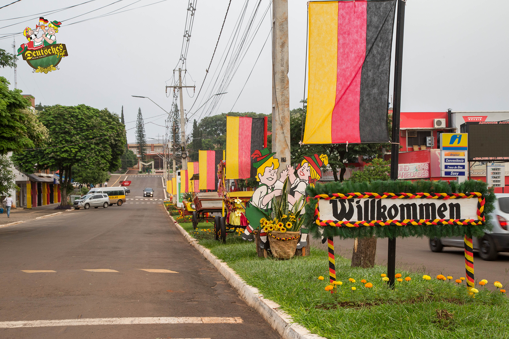

A cidade é conhecida por suas festas e tradições culturais que atraem visitantes de
toda a região.
DEUTSCHES FEST
DEUTSCHES FEST
A Festa Alemã de Missal é considera a maior festa típica do Oeste do Paraná. O evento foi criado em 2002 para preservar a cultura e, divulgar as tradições de geração a geração. A Deutsches Fest acontece todos os anos no fim de semana seguinte à Páscoa. Há muita alegria, chope, diversão, concursos da Rainha e Casal Fritz e Frida, músicas típicas, jogo do barril, brincadeiras e gastronomia típica.

CAFÉ COLONIAL
CAFÉ COLONIAL
O evento ocorre na metade de junho, sempre próximo ao Dia dos Namorados. São servidos mais de 60 pratos, doces e salgados. O Café Colonial é tradicional e beneficente. O Provopar organiza o café com apoio de grande equipe de voluntários.